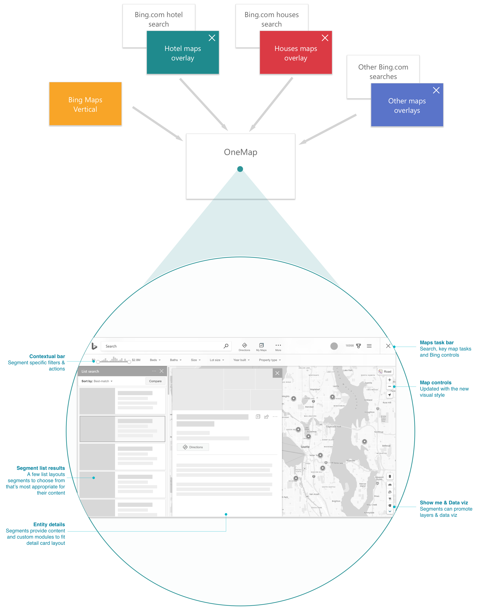

Journey
Overview
Journey was a 6 week design-led sprint at Bing. The goal of the sprint was to create a vision for a travel app and to pitch it to our maps PM and dev teams in hopes of getting resources to build it. The app focused on the three stages of a trip: planning, traveling and reminiscing. Some of the experiences we focused on were creating personalized travel itineraries for the user, encouraging discovery during a trip and creating a beautiful journal of the trip for the user to look back on or share.

Process
Process goes here.
After getting consensus that the framework team will determine various list layouts and the struction of each details card,
the next step for design was to explore layouts to address different needs.

Outcome
This project benefited both the maps team and other segment teams.blah blah. Here are a few examples of how various segments used the map canvas to show their information. The framework is flexible enough to let segments shine while at the same time keeping the experiences feeling like they're all a part of the same family.